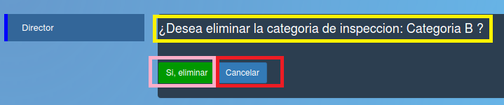
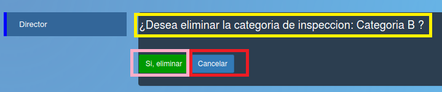

¿Desea eliminar la categoria de inspeccion?¶
Si desea eliminar la categoría de inspección debe apretar el botón verde “Si, eliminar” enmarcado en rosa, si desea cancelar la eliminación debe apretar el botón azul “Cancelar” enmarcado en rojo.
Si desea eliminar la categoría de inspección debe apretar el botón verde “Si, eliminar” enmarcado en rosa, si desea cancelar la eliminación debe apretar el botón azul “Cancelar” enmarcado en rojo.
